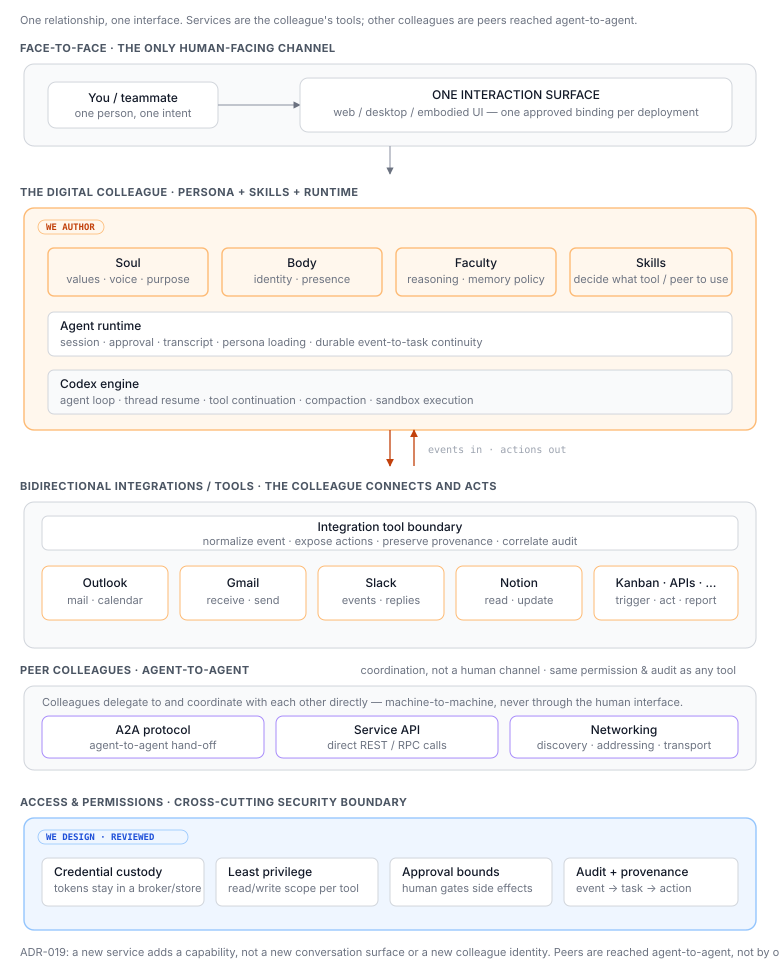

Phase 0.5 — One face-to-face interface, many tools
Status: 📐 Design note. The implementation lives in a separate code repo (this repo is architecture only). Parallel track — not on the cloud progression (0 → 1 → 2 → 3).
One line: a digital colleague is a layered persona running on the Codex engine through an agent runtime. A person meets it through one consistent interaction surface; the colleague itself uses Outlook, Gmail, Slack, calendars, Notion, and other services as bidirectional tools to receive and complete work.
This is deliberately not a multi-channel UX. As with a human colleague, the relationship is face-to-face; phone, mail, chat, and work systems are tools the colleague uses, not separate versions of the colleague that the user must learn to operate. ADR-019 records that boundary.
We align the colleague definition with OpenClaw's official
agent workspace:
IDENTITY.md defines name and presentation, SOUL.md defines persona, tone,
and boundaries, AGENTS.md defines operating instructions, USER.md records
teammate context, and skills/ plus memory files provide capabilities and
continuity. Body and Faculty are not OpenClaw workspace components and are
therefore not part of this architecture. The content, integrations, and whole
access-and-permission design are ours; the framework is a design reference,
not a black-box dependency that quietly holds our credentials.

C4 diagram set
The diagrams deliberately separate structure, runtime behavior, and deployment; mixing them is what made the app-server / MCP / webhook boundary ambiguous.
| View | Question answered | Diagram |
|---|---|---|
| C1 — System Context | Who and which external systems interact with the digital colleague? | architecture.svg |
| C2 — Container | Which applications/processes exist, and how do app-server, MCP, and webhook ingress connect? | system-architecture.svg |
| C3 — Component | What lives inside the colleague runtime/control container? | runtime-components.svg |
| C4 — Code | What classes make up one component (the Triage Policy)? | triage-policy-code.svg |
| Dynamic | How does a SaaS event wake a colleague and lead to an outbound action? | integration-flow.svg |
| Deployment | What runs on the user device versus the always-on public edge? | deployment.svg |
{kind=link}
{kind=link}
{kind=link}
{kind=link}
{kind=link}
{kind=link}
Where triage lives — one home. The deterministic triage gate (deliver-only /
reason / silent) is a Runtime Controller concern: it decides what to do with
an accepted event. Event Ingress only verifies, de-duplicates, and buffers — it
does not triage. So triage appears once, inside the Runtime Controller (C2),
as the Triage Policy component (C3), whose classes are the C4 code view. The
service-integration tier holds transport pieces only (ingress, scheduler,
subscription renewal, MCP tool servers).
C4 uses “container” to mean an independently running application, service, process, or data store — not necessarily a Docker container. To avoid that common ambiguity, the C2 view keeps the standard C4 title but labels each box with its concrete runtime type. Docker, VM, workstation, and clustering details remain in the Deployment view. See the C4 container definition.
C4 recommends System Context and Container diagrams for most teams, while Component diagrams are optional and deployment/runtime flows are separate supporting views. We include C3 and Dynamic here because they resolve the one important Phase 0.5 boundary: webhook ingress versus MCP tool execution.
Supporting layered reference architecture
The earlier layered view remains useful because it shows the whole design language on one page: human surface, persona, runtime and engine, service integration, external services, and the cross-cutting access/permission/audit boundary.

This is intentionally a supporting layered reference architecture, not a numbered C4 level. It is closest to a C2/container overview, but it mixes containers with persona concepts, internal responsibilities, and a cross-cutting security concern. Use it for stakeholder orientation; use the C1, C2, C3, Dynamic, and Deployment views above when an implementation boundary or runtime sequence must be precise.
Goal
Prove the smallest believable digital-colleague experience:
- A person opens one approved interface and talks to the same colleague every time — no channel selection or routing knowledge required.
- The colleague knows which services it may use and chooses the appropriate tool from the task context.
- Service events can create or resume work, and the colleague can act or reply through that same service.
- Every inbound event and outbound action is permission-bounded and auditable.
The stack
| Layer | Provided by | We do |
|---|---|---|
| Interaction surface — the one face-to-face UI | approved web/desktop/embodied client | choose one binding; keep the interaction contract stable |
| Runtime — sessions, approvals, transcript, persona loading | off-the-shelf agent runtime | configure it |
Colleague definition — IDENTITY.md, SOUL.md, AGENTS.md, USER.md, skills/, memory |
OpenClaw workspace model | author and version it — this is the colleague |
| Engine/control API — thread/turn lifecycle, streamed events, approvals, agent loop | Codex app-server |
use it through its JSON-RPC client protocol |
| Integrations/tools — Outlook, Gmail, Slack, calendar, Notion, kanban, … | Codex MCP client + MCP servers/tool adapters + vendor APIs | configure/build the tool boundary; keep it composable |
| Event intake — SaaS push, webhook verification, de-duplication, buffered hand-off | vendor webhooks + a small always-on receiver | send accepted events to runtime triage, then into an app-server turn |
| Access & permissions — credentials, scopes, sandbox, approval, audit | ours to design | spell it out; security reviews it |
The colleague is data: a persona, skills, memory policy, and permission set. The interface, runtime, engine, and service adapters are replaceable bindings.
The interaction model
There is exactly one component called the channel: the human-facing interaction surface. It may be implemented as a web app, desktop app, or an embodied office UI, but a deployment presents one consistent place to meet the colleague.
Outlook, Gmail, Slack, Teams, Linear, Notion, and calendars are not peer channels. They are bidirectional integrations, but the two directions use different runtime paths (ADR-020):
- Outbound / during a turn: Codex app-server runs the agent. Its Codex host invokes a configured MCP tool; the MCP server/tool adapter calls the SaaS API. App-server controls the thread/turn and streams tool events, but it is not itself a Gmail/Slack/Outlook API adapter.
- Inbound / outside a turn: a SaaS webhook cannot be sent to an MCP tool and
automatically create a Codex turn. An always-on webhook receiver verifies and
de-duplicates the event, then a runtime/app-server client calls
thread/startorthread/resume, followed byturn/start.
So the short answer is: SaaS actions run under the Codex app-server agent lifecycle via MCP; SaaS wake-up events enter through a separate webhook path that converges at the app-server control API. Reuse off-the-shelf pieces rather than build a bus:
- Sources. Where a service pushes natively — Microsoft Graph (Outlook),
Google Calendar
watch(), Gmail watch — use it. Subscription expiry is service-specific and must be renewed, or events silently stop. Where a service has no push (punch-clock, periodic summaries), a scheduler (cron / heartbeat) plays the same role, time-driven. - Ingress. A small always-on webhook receiver (public HTTPS) verifies signature + source and de-duplicates. Its content is untrusted input. The receiver/runtime then acts as an app-server client; app-server does not expose a generic SaaS webhook endpoint.
- Triage gate — a rule, not the LLM. "Does this need agent reasoning?" No → deliver-only: forward the notice with no LLM turn (saves tokens). Yes → use app-server JSON-RPC to start/resume the thread and start a bounded turn with the event as context.
- Outcome. The colleague acts/replies through the same integration
(outbound: search, create, update, send, reply), or returns
[SILENT]when nothing is worth interrupting a human for. - Continuity: the resulting task/session is visible from the one interaction surface, even if nobody had it open when the event arrived.
The old "dispatcher" idea therefore becomes a small event ingress + deterministic triage + app-server client, not a collection of channel-specific conversation services and not an MCP responsibility. Event-driven and time-driven coexist and feed the same gate. The full inbound pipeline (sources → ingress → triage → outcome) is drawn in integration-flow.svg; the main diagram shows the same tools as the colleague's ring.
Peer colleagues (agent-to-agent)
A third relationship, distinct from both the human interface and service tools: colleagues coordinate with each other directly — delegation, hand-off, "ask David the SA to review this" — over an agent-to-agent protocol, a service API, or plain networking, machine-to-machine, never through the human interaction surface. Humans meet a colleague one way (face-to-face); colleagues reach each other a different way (peer). The single-surface rule is about the human relationship — it does not mean a colleague can only ever be reached one way.
A2A rides the same identity, permission, and audit rules as any tool: a peer call is a bounded, credentialed, logged action, not a backdoor around approval. This is a forward-looking dimension — short-term demos need only one colleague, so it is recorded to keep the model honest, not to build now. The main diagram deliberately shows one colleague; peers get drawn side by side once a second colleague is real.
What this replaced (and why)
Earlier Phase 0.5 drafts hand-built channel adapters around codex app-server.
ADR-018 retired that bespoke
runtime layer. The next draft still described Gmail and Slack as parallel
channels supplied by the runtime; ADR-019
corrects the product model: runtime capabilities may be reusable internally,
but the architecture exposes one interaction surface and treats surrounding
services as tools.
Access & permissions
A colleague that can read mail, post to Slack, schedule meetings, and update work systems is a real security surface:
- Credential custody. OAuth tokens and API keys live in a secrets store (OS keychain locally, a secrets manager in cloud), never in persona files, config, logs, or traces.
- Least privilege. Each integration gets the minimal read/write scopes the colleague needs, per colleague — never a shared god-token.
- Inbound trust boundary. Service content is untrusted input even when the sender is known. Adapters preserve provenance; skills enforce sender/resource allow-lists and prompt-injection controls.
- Sandbox + approval bounds. Sandbox policy limits reach; approval policy decides which writes, sends, and external side effects require a human.
- Audit. Every service event, tool call, approval, and outbound action records what happened, on whose behalf, with which permission and correlation id.
- Runtime trust boundary. Any runtime or broker holding real-account tokens is a security-review target; prefer self-hosting or a credential broker we control.
Open implementation questions
- Which single interaction surface is the Phase 0.5 binding?
- For each service, is event delivery a webhook/subscription or bounded polling?
- Is each outbound SaaS capability an existing remote MCP server or a small adapter we host, and where are its OAuth tokens brokered?
- Which operations are read-only, auto-approved writes, or human-approved writes?
- Where does the durable event/task queue live while the local device is offline?
- How are service event ids, agent sessions, approvals, and outbound actions correlated in the audit trail?
These are answered against the runtime and vendor APIs in the implementation repo; they do not change the conceptual boundary above.
Short term vs long term
- Short term — local colleague. One persona on a user's device, reached through one interface, with a small allow-listed set of integrations. The device supplies compute; integrations can wake work while it is online.
- Long term — centralized colleague. The same persona and skills run on an always-on runtime. The interaction contract and tool contracts stay the same; only deployment, durability, and scale change as the work rejoins Phase 1+.
Where the implementation goes
A separate code repo holds the runtime config, persona files, interaction-surface binding, event-to-task skill, service integrations, and account setup. This repo keeps the architectural intent, diagram, and decisions (018, 019, 020).
Sources for the architecture boundaries
- OpenClaw agent workspace
— defines the responsibilities of
AGENTS.md,SOUL.md,USER.md,IDENTITY.md, skills, and memory files. - OpenClaw
SOUL.mdpersonality guide — keeps persona, tone, and boundaries inSOUL.md, separate from operating rules inAGENTS.md. - Codex app-server — app-server is the programmatic control interface for clients: initialization, thread/turn lifecycle, approvals, and streamed agent/tool events.
- Codex MCP — MCP connects the Codex host to tools and context through STDIO or Streamable HTTP servers.
- C4 diagrams — static zoom levels are separate from Dynamic and Deployment supporting views.
本文參考來源 · 6
以下保留本文實際引用的來源；引用不等於實測，適用範圍以正文說明為準。